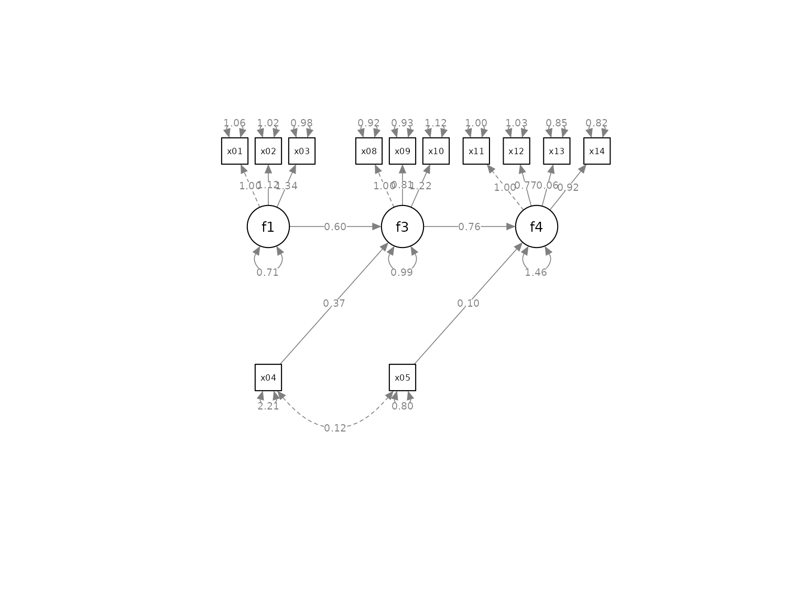

Using set_sem_layout() for a Model With Observed Exogenous Variables
Shu Fai Cheung & Mark Hok Chio Lai
Source:vignettes/articles/sem_with_observed.Rmd
sem_with_observed.RmdGoal
This article illustrates how to use set_sem_layout()
from the package semptools for a
model with latent variables and one or more observed exogenous variables
(a.k.a., predictors or independent variables in some disciplines), and
the observed exogenous variables to be placed like other latent
variables in a model diagram.
This article assumes basic knowledge in using semptools
and set_sem_layout() (see
vignette("semptools") and
vignette("quick_start_sem") for illustrations).
Model and Data
The following model is to be fitted to the dataset
sem_example, provided in the package
semptools. It is fitted by lavaan::sem():
library(semptools)
library(lavaan)
#> This is lavaan 0.6-16
#> lavaan is FREE software! Please report any bugs.
mod <-
'f1 =~ x01 + x02 + x03
f3 =~ x08 + x09 + x10
f4 =~ x11 + x12 + x13 + x14
f3 ~ f1 + x04
f4 ~ f3 + x05'
fit_sem <- lavaan::sem(mod, sem_example)In this model, x04 and x05 are exogenous
observed variables. They affect f3 and f4 but
they themselves are not indicators of latent factors.
Setting indicator_order and
indicator_factor
For a model in which all observed variables are indicators of latent
factors, they are placed in the vector for
indicator_order.
If an observed variable is not an indicator, then this is how to
include it in the call to set_sem_layout():
It should be placed in
indicator_orderandindicator_factoras if it were a latent factor and it were its own indicator.In the matrix for
factor_layout, set its position as if it were a latent factor.No need to specify the position of its indicators in the matrix for
factor_point_to. Just leave the cellNA.
We generate the basic diagram by semPlot::semPaths()
first:
library(semPlot)
library(semptools)
p <- semPaths(fit_sem,
whatLabels = "est",
sizeMan = 5,
nCharNodes = 0,
nCharEdges = 0,
edge.width = 0.8,
node.width = 0.7,
edge.label.cex = 0.6,
style = "ram",
mar = c(10, 10, 10, 10),
DoNotPlot = TRUE)These are the vectors for indicator_order and
indicator_factor. Note that x04 and
x05 appear on both vectors.
indicator_order <- c("x04", "x05", "x01", "x02", "x03",
"x11", "x12", "x13", "x14", "x08", "x09", "x10")
indicator_factor <- c("x04", "x05", "f1", "f1", "f1",
"f4", "f4", "f4", "f4", "f3", "f3", "f3")This is the matrix for factor_layout, created by
layout_matrix():
factor_layout <- layout_matrix(f1 = c(1, 1),
f3 = c(1, 2),
f4 = c(1, 3),
x04 = c(2, 1),
x05 = c(2, 2))
factor_layout
#> [,1] [,2] [,3]
#> [1,] "f1" "f3" "f4"
#> [2,] "x04" "x05" NAThis is the matrix for factor_point_to, created by
auto_factor_point_to() (added in semptools
0.2.9.15) [^If not available, the matrix can be created manually by
matrix().]
factor_point_to <- auto_factor_point_to(factor_layout,
f1 = "up",
f3 = "up",
f4 = "up")
factor_point_to
#> [,1] [,2] [,3]
#> [1,] "up" "up" "up"
#> [2,] NA NA NALast, we created more vectors to further modify the diagram:
indicator_spread <- c(f4 = 1.5)
p2 <- set_sem_layout(p,
indicator_order = indicator_order,
indicator_factor = indicator_factor,
factor_layout = factor_layout,
factor_point_to = factor_point_to,
indicator_spread = indicator_spread)
plot(p2)
Final Remarks
For further information on using set_sem_layout(),
please refer to vignette("quick_start_sem"). For
illustrations on how to modify a path diagram from
semPlot::semPaths() using functions in
semptools, please refer to
vignette("semptools").